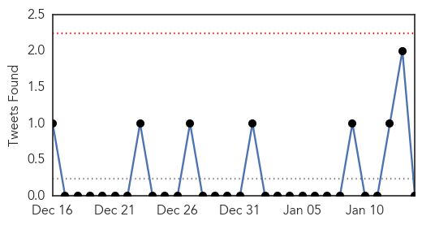
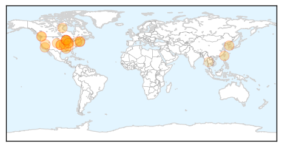
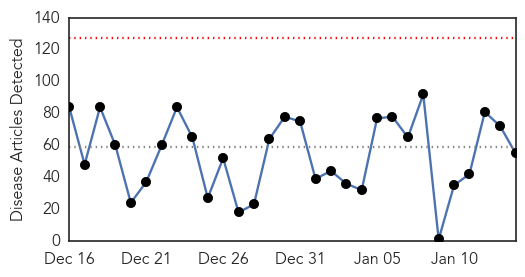
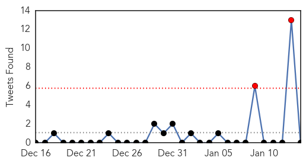

Influenza
30-Day Web Trend
1 alerts, 0 warnings

30-Day Twitter Trend
1 alerts, 0 warnings

Article Locations
Article Confidences

Top Articles:
- 0.997
- Flu shot lowers risk of rare side-effect in most seasons for most people
- 0.997
- Knox Health Department offers guidance for flu sufferers
- 0.994
- Flu shot reduces risk of rare Guillain-Barré Syndrome in most cases, study finds
- 0.993
- Death Toll Rises As Four More Die In Allegheny
- 0.991
- Flu Widespread in Rhode Island, Vaccine 'Bad Match' for the...
- 0.990
- Mississippi Public Broadcasting
- 0.989
- Northwest Prepares for Flu Season
- 0.989
- Influenza making its presence known in southwest Nebraska
- 0.988
- Flu keeps central Wisconsin clinics busy
- 0.982
- Health officials urge sick people to stay home as flu epidemic h
- 0.975
- Los Angeles County reports spot shortages of flu meds
- 0.969
- Granite Staters urged to get vaccinated against flu
- 0.960
- State health commissioner wants more Hoosiers to get the flu shot
- 0.954
- S. Korea confirms case of bird flu – The Korea Times
- 0.938
- Wisconsin 2-year-old dies from flu
- 0.918
- Universal flu vaccine on the horizon, thanks to antibodies
- 0.918
- Universal vaccine against flu may be on the horizon, say researchers
- 0.892
- Avian Flu Scan for Jan 14, 2015
- 0.889
- No new avian flu cases reported in province
- 0.871
- Have the Flu? Health Officials Urge You to Stay Home
- 0.865
- Flu epidemic prompts Valley hospitals to declare internal disast
- 0.801
- Poultry industry optimistic and on the mend
- 0.794
- Pseudorabies Outbreak Kills Hunting Dogs in Sevier County
- 0.785
- Mayo Clinic expert explains difference between severe sepsis and septic shock
- 0.605
- Corner crash
- 0.586
- China Joins List of Countries Restricting U.S. Poultry Imports Due to Avian Flu
Top Tweets:
-
No tweets found for Jan 14, 2015
Unknown
30-Day Web Trend
0 alerts, 0 warnings

30-Day Twitter Trend
2 alerts, 0 warnings

Article Locations

Article Confidences

Top Articles:
- 0.993
- California flu season 'sporadic,' despite reports of severe flu projections
- 0.988
- UF researchers discover new virus in ticks
- 0.987
- Health officials: Indiana flu-related deaths expected to rise
- 0.985
- FDA, CDC take steps to deal with bad flu season
- 0.976
- Glasgow flu vaccines: Half of at risk Glaswegians haven't had their shot at height of sick season
- 0.964
- CDC to parents: Seasonal viruses can mimic flu symptoms
- 0.955
- Indiana health chief: Flu not taken seriously enough
- 0.939
- Doctors urged to prescribe more anti-viral meds to more patients
- 0.936
- Shigella Outbreak Strikes Williamsburg, Borough Park In Brooklyn « CBS New York
- 0.921
- More birds culled as Taiwan battles worst avian flu in 10 years
- 0.919
- Baltic countries continue to struggle with ASF
- 0.917
- Chicago Tribune
- 0.917
- Chicago Tribune
- 0.917
- Chicago Tribune
- 0.917
- Chicago Tribune
- 0.917
- Chicago Tribune
- 0.917
- Chicago Tribune
- 0.917
- Chicago Tribune
- 0.917
- Chicago Tribune
- 0.917
- Chicago Tribune
- 0.917
- Chicago Tribune
- 0.917
- Chicago Tribune
- 0.917
- Chicago Tribune
- 0.917
- Chicago Tribune
- 0.917
- Chicago Tribune
- 0.917
- Chicago Tribune
- 0.917
- Chicago Tribune
- 0.917
- Chicago Tribune
- 0.917
- Chicago Tribune
- 0.917
- Chicago Tribune
- 0.916
- More birds culled as Taiwan battles worst avian flu in 10 years
- 0.910
- The world windows to Thailand
- 0.910
- The world windows to Thailand
- 0.910
- Defeating Disease: Exhibit Shows Guinea Worm's Eradication
- 0.878
- Shigella Outbreak Plagues Williamsburg and Borough Park Children
- 0.866
- SINGAPORE PRESS-Temasek to turn Mandai into nature heritage precinct-Business Times
- 0.866
- Eighteen air strikes target Islamic State in Syria, Iraq
- 0.844
- Hospitals fall short on government's patient safety goal
- 0.805
- Cities unite to fight bird flu outbreak
- 0.789
- 'Fight the Flu' kits help seniors avoid the virus
- 0.772
- Lymphatic filariasis: Govt launches free medicine distribution
- 0.751
- Paralytic Disease Has Sicked 103 Children
- 0.720
- Joint Forces Command United Assistance service members stick to standards
- 0.703
- New York City Health Department Confirms Co-Op City Towers Contaminated with Legionnaires Disease Bacteria : Nation : Christianity Daily
- 0.680
- 14 January 2002: foot-and-mouth disease epidemic ends
- 0.679
- Swastha Bharat to take Swachh route to health
- 0.673
- State to open first cancer centre in city
- 0.664
- Risks to EU of Transboundary Animal Diseases Assessed
- 0.614
- Voodou Priests And Doctors Are On The Frontline Of Haiti's Mental Health Care
- 0.605
- Mosquitoes swarm during sticky summer
Showing top 50 articles...
Top Tweets:
- 0.531
- It's flu season - you can find answers to common flu questions in the infographic http://t.co/EPvUiumjIa